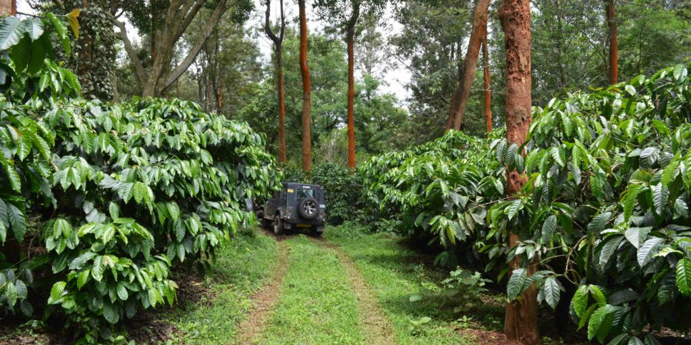

I don't do anything, I'm just a photo.
Hello I am section 1
Hello I am section 2
If you roll your mouse over the photo, I'll fill it with a colour.
I am a picture of some coffee beans. Click on me to restore the image.
Hello I am section 3
If you click this button, I'll show you another photo
